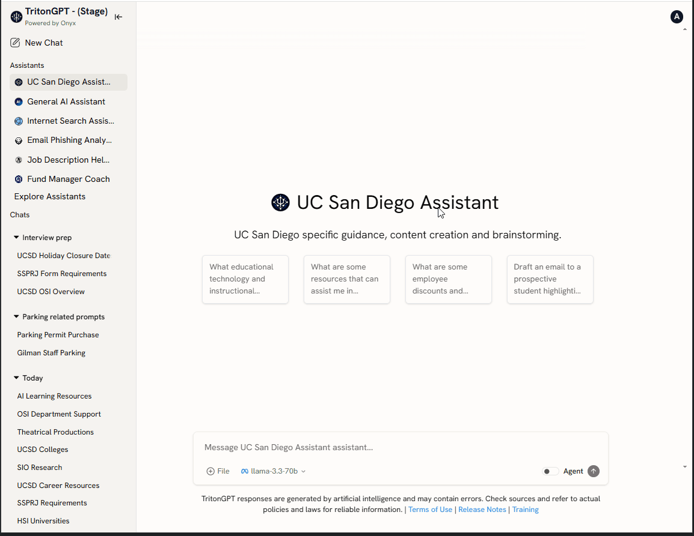
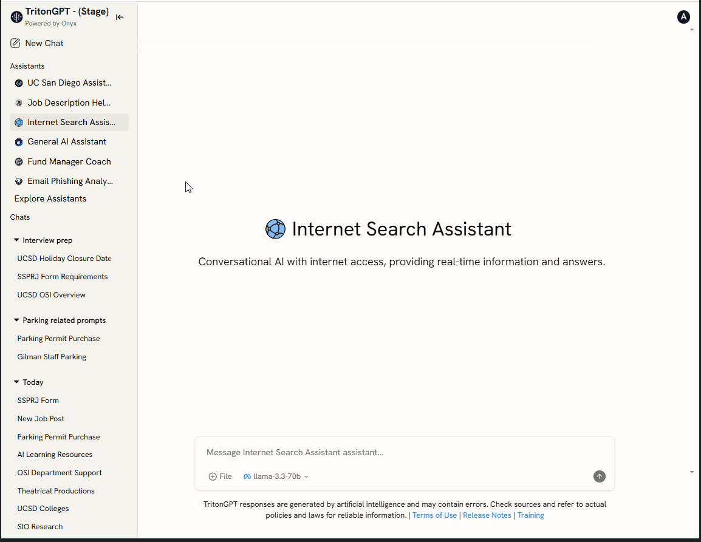
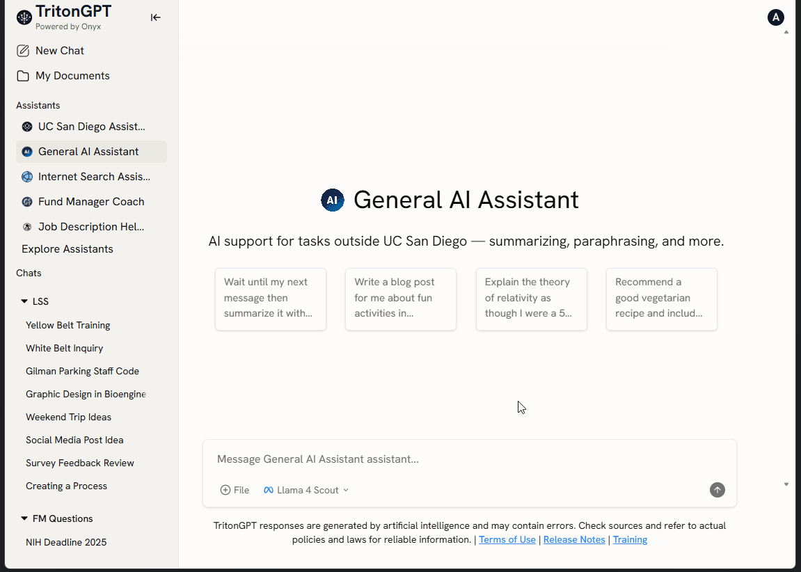

TritonGPT Assistants
To meet the diverse needs of our staff and community, ITS has created an initial set of assistants in TritonGPT. Think of each assistant as an ally who is trained on specific sets of information or tasks. Over time, additional assistants can be created, along with new features and functionalities. We invite you to try them and help us shape their uses. We will apply what we learn from these assistants as we develop new ones in the future.
About Each Assistant
UC San Diego Assistant
The UC San Diego Assistant focuses on UCSD Blink pages and other internal documentation. It will provide links to source documents for users to review as they search for information pertaining to UCSD.
BEST USED WHEN:
You are a staff member and you are seeking information that likely exists on Blink.
EXAMPLE PROMPTS:
"I heard this acronym, what does it mean?"
"Where can I find vegan meal options on campus?"
"People keep mentioning the Fallen Star. What is that?"
CONTENT USED IN THIS ASSISTANT:
- Academic Integrity
- Academic Personnel website
- Admissions website
- Advising
- Amphitheater
- Associated Students
- Athletics
- Basic Needs
- Behavioral Consultation Team
- Blink
- Business Analytics Hub
- Calendar of Events
- Career Center
- Center for Mindfulness
- Center for Student Accountability, Growth, and Education (SAGE)
- Center for Student Involvement
- Chancellor website
- Childcare Services
- Colleges
- Counseling and Psychological Services (CAPS)
- Course Catalog
- Diversity
- Eighth College
- Educational Technology
- Foundation
- Housing and Dining
- International Faculty & Scholars Office
- LGBT Resource Center
- Marshall College
- Muir College
- Office for Students with Disabilities (OSD)
- Office for the Prevention of Harassment & Discrimination (OPHD)
- Office of Technology Innovation & Commercialization
- Parents and Families Resources
- Policies (UC San Diego and UCOP)
- Postdoctoral Scholar Affairs
- Recreation
- Research Ethics Program
- Revelle College
- Roosevelt College
- Scripps Institution of Oceanography
- Seventh College
- ServiceNow Knowledge Base content (public facing)
- Student Health and Well Being
- Sixth College
- Student Financial Solutions
- Student Health Services
- Student Success Coaching Program
- Student Veterans Resource Center
- Study Abroad
- Strategic Plan
- Teaching + Learning Commons
- The Commons
- Transfer Students
- Transportation
- TritonAI
- Triton Card Account Services
- Triton Firsts
- TritonLink (students.ucsd.edu)
- Triton Testing
- UC Path website
- UC San Diego Brand
- UC San Diego General Catalog
- UC San Diego Library
- UC San Diego Today
- UCSD Police Department
- University Centers
- University Communications
- Vice Chancellor Student Affairs
- Warren College
- Women's Center
General AI Assistant
The General AI Assistant removes UCSD context and does not provide reference links to source documents. The AI is focused on supporting users with writing and editing content.
BEST USED WHEN:
You are writing or editing content, generating ideas, or summarizing information.
EXAMPLE PROMPTS:
"Write an email to a coworker celebrating their birthday. Use a professional tone."
"Provide a bulleted list of ideas of team-building activities."
"Translate this content to Spanish"
Fund Manager Coach
The Fund Manager Coach provides guidance on budgeting, grant guidelines, financial transactions, payroll, and compliance for UC San Diego. It has been trained on Finance and Research Knowledge Base Articles from Services and Support and Blink pages related to finance, research, procurement, and travel & expense.
Currently, Fund Manager Coach excludes documents related to award sponsor policies. We're excited to explore the possibility of integrating financial data into Fund Manager Coach in the future, which will enable it to provide even more comprehensive and accurate information.
BEST USED WHEN:
You are a staff member and you are seeking information related to finance, research, procurement, and travel & expense processes at UC San Diego.
EXAMPLE PROMPTS:
"How do I access the Business Activity Hub?"
"List all of the Blink pages related to international travel?"
"I need to reimburse someone who is NOT a UCSD employee for lab supplies. How do I do this?"
"If I have a year left on a grant, what do I need to be aware of in terms of unexpected salary charges?"
Job Description Helper
The Job Description Helper assists with writing Position Overviews for jobs in the Career Tracks library. Leveraging over 1,300 job standard templates, it uses a pre-defined flow that engages hiring managers in a dialogue, capturing the specific requirements of the job. The AI crafts language that not only complies with established job card standards but also incorporates the unique characteristics of the position.
BEST USED WHEN:
You are a hiring manager creating a new Position Overview.
TIPS:
The tool will ask you for the position title, as well as details you may want to incorporate into the overview. You can also further shape the content to create a post for LinkedIn or email announcement.
Phishing Analyzer
The Phishing Analyzer allows users to upload or paste emails to receive feedback on potential email phishing indications. The tool will provide a score between 1-10, with 1 being low risk and 10 being very high risk.
BEST USED WHEN:
You receive an email and you are uncertain on whether the email is safe.
TIPS:
Do not open links in suspicious emails.
If the risk rating is above 5, you are advised to submit the email to abuse@ucsd.edu to report the potential phishing attempt.
Expert Notetaker
An AI assistant that converts raw meeting inputs (Zoom/Teams transcripts, or rough notes) into clear, structured documentation focused on decisions and actionability.
Output format:
- Date, Time and Attendees — meeting date/time; participants; recorder
- Executive Overview — purpose; key decisions; top actions
- Detailed Discussion Log — timestamped highlights; context; references
- Review of Key Topics — themes; changes; open issues
- Decision Register — numbered decisions; rationale; impact; owner/date
- Action Item Table — tasks; owners; due dates; priority; status/dependencies
Copy and paste (or upload) your meeting transcript into the prompt window and Expert Notetaker will do its magic.
How to Choose an Assistant
Select an assistant in TritonGPT from the left column, as shown below:

You can select "Explore Assistants" to pin your favorites, or unpin others. You may also sort your assistants by dragging and dropping them in your preferred order, as shown below.

How to Choose the Model
Different models are optimized for different types of tasks. Selecting a specific model allows you to prioritize factors like speed, depth of reasoning, or content generation style, depending on what you are trying to accomplish. Choosing the right model helps ensure TritonGPT delivers responses that best match your needs.
Select a model from the dropdown before submitting your prompt to tailor the response to your needs.

Ready to Try it Yourself?
Stay Informed
To receive the latest announcements and news, subscribe to the TritonAI mailing list.